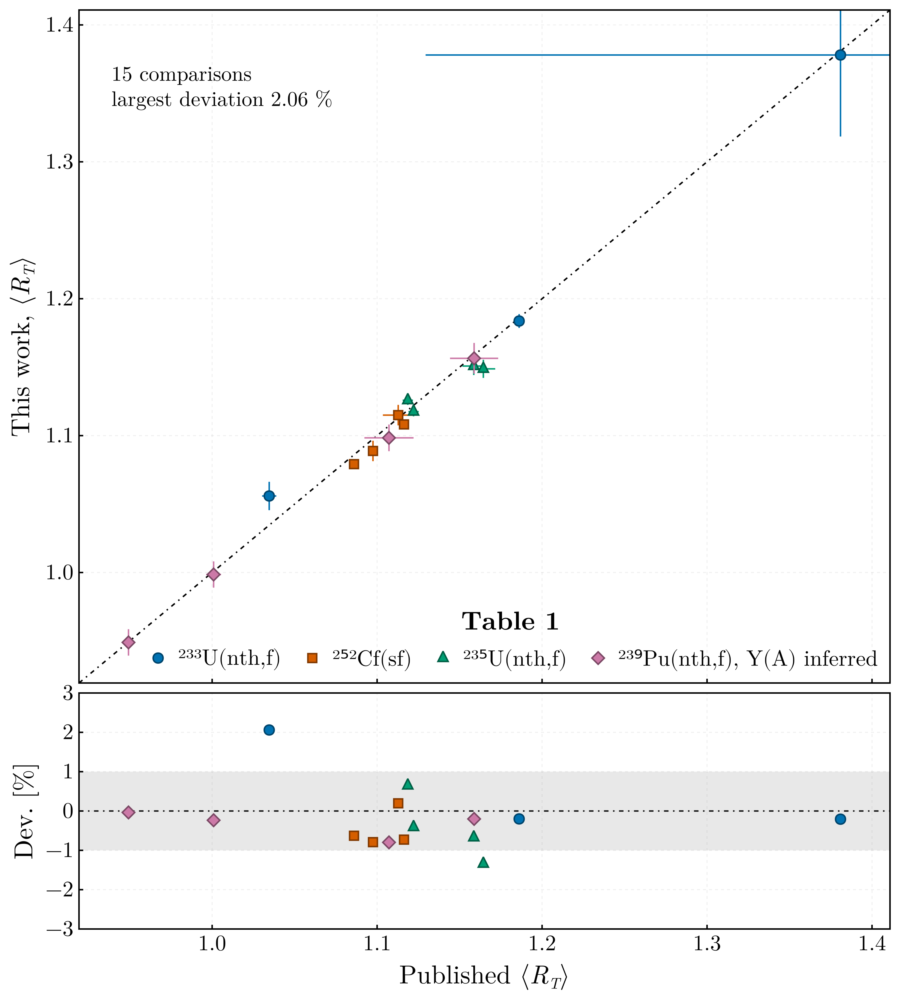

Validation
Verified:
The exact identity at the symmetric split.
r_ν = 1/2returnsR_T = 1to 10⁻¹² on the four shipped domains, weighted and unweighted, as an outcome of the construction rather than an imposition, and a run reports it if it does not.The round trip with the consumer's partition. For every heavy mass of the ²⁵²Cf and ²³⁵U domains and
R_Tof 0.8, 1 and 1.45, the extraction returnsR_Tfrom theE*_H/TXEthe shared forward relation gives, to a relative 10⁻¹², weighted and unweighted; with one charge per mass all three averagings reduce to the closed form. The uncertainty propagates with the slope of the inversion, checked against a finite difference, and the fitted curve is continuous at every breakpoint and stays inside the physical range.The shell structure. The level density parameter is suppressed threefold at the doubly magic heavy fragment relative to a mid-shell fragment, which is what gives
R_a(A_H)its structure.The shape of the result. The segmented
r_ν(A_H)reproduces the published systematic behaviour — one half at the symmetric split, a minimum near the heavy magic fragment, one half again near the most probable fragmentation, and a near-linear rise above it.The published total averages, to within 1.0 % for every measurement but one. The
⟨R_T⟩of Table 1 of [1], perν(A)dataset and perY(A)distribution, comes back from independently retrieved archive data (ExforFissionData.jl v0.5.0) with the published settings: the ratio of means over the digitised Gaussian charge tables, or the mean values for ²³³U, on the shared fragmentation domain:System Y(A)Datasets compared Largest deviation, published settings Largest deviation, shipped settings ²³³U(nth,f) Surin 3 of 3 1.89 % (Apalin; others 0.41 %) 2.07 % (Apalin; others 0.21 %) ²⁵²Cf(sf) Göök 4 of 5 0.54 % 0.79 % ²³⁵U(nth,f) Al-Adili, Straede 2 of 3 1.00 % 1.34 % ²³⁹Pu(nth,f) Nishio 1995, inferred by agreement 4 of 5 0.68 % 0.80 % 
The figure shows the shipped settings over the distributions the table names; the shipped configurations average over one primary experiment's
Y(A)per system, which for ²³³U, ²³⁵U and ²³⁹Pu is not among them.The ²³⁹Pu rows are averaged over a distribution inferred by agreement. The published table averages over an experimental distribution its caption does not identify, and over a second that is calculated and cannot be retrieved; over Nishio 1995 the Nishio, Apalin and Zamyatnin
ν(A)rows come back to within 0.12 % and Fraser to 0.68 %, which identifies that distribution, or one close to it, without confirming it. The fifth row, Tsuchiya 2000, comes back to 0.20 % but is not asserted: the retrieval records its scale as off that ofν̄by 3.9 %, which cancels inr_ν.Apalin's 52 ²³³U masses are given as non-integer values, which the retrieval interpolates onto 69 integers. Rounded to integers instead, they pair only part of the yield, and the row comes back to 0.60 %. The shipped settings — Wahl's 1988 charge model, the charge-resolved inversion weighted by the
⟨TXE⟩of the configured⟨TKE⟩(A)dataset, andY(A)symmetrised — hold every other row to within 1.34 %. Wahl's model moves the ²³³U rows by +0.29 % to +0.37 % from the mean values the paper used there, and the rows of the other systems by less than 0.1 %. The excitation weight moves every row by −0.04 % to −0.15 %. The symmetrisation moves the rows over Göök's and Straede's distributions, the two measured on both wings, by −0.1 % to −0.7 %.Table 2 is reproduced for Nishio's ²³³U measurement: the Gilbert-Cameron variant to 0.20 % and the one-charge-per-mass variant to 0.60 %. Apalin's rows, affected by the interpolation, come back to 1.25 % and 2.08 %. The remaining datasets could not be compared because the archive query did not return the
ν(A)measurement the table names.The uncertainty of the total average. The independent-points uncertainty reproduces the published one, ±0.0020 against ±0.0021 for ²³³U Nishio over Surin, and the covariance-propagated uncertainty is ±0.0050, two and a half times larger, because the tabulated points of a fitted curve are not independent. Fraser's sparse ²³³U set carries ±0.25 in the published table; read without uncertainties it gives ±0.23. With the uncertainties its archive entry quotes at 16 of its 33 masses, which the retrieval reads, the covariance-propagated uncertainty is ±0.059 and the independent-points one ±0.019.
The suite passes on the declared Julia floor and on the current release.
The level density models, against their papers: the back-shifted Fermi gas coefficients, shell correction, pairing term and liquid-drop coefficients (the mass formula of [21]) of [6–8], and the Gilbert-Cameron eqs. (20) and (21) with Table III of [9]. Both are implemented in FissionFragmentsDomain.jl, which ships the table and tests the transcription. This package's own implementations, checked against the same sources before they were retired, give the same total averages to 5 × 10⁻⁶ under the published settings.
Not verified:
- The yield distribution of the ²³⁹Pu rows of Table 1, Nishio 1995, which is inferred by agreement rather than named by the paper.
- The effect of neglecting the back-shift. The level density parameter is taken from a systematic that fits it jointly with a back-shift
E1, while the extraction rests on the un-shiftedE* = a T²the method is published under.E1differs between the two fragments, so it does not cancel in the ratio; at order ±1 MeV against fragment excitations of 10-20 MeV the effect is expected to be small, but it has not been quantified. - The path for a fissioning nucleus of odd mass number is covered only by unit tests; no such case exists in the data.